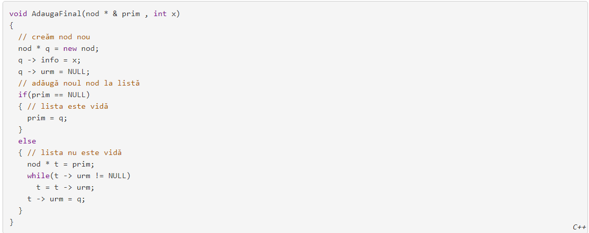

Nodurile sunt variabile dinamice. Crearea unui nou nod înseamnă crearea unei variabile dinamice. Acest lucru se face cu ajutorul operatorului C++ new, care are ca rezultat adresa variabilei nou create. Aceasta va fi memorată într-un pointer de tip nod *. Să-l numim p: nod * p = new nod; Nodurile sunt variabile de tip structură, cu câmpurile info și urm. Accesul la câmpuri se va face prin intermediul pointerilor, cu ajutorul operatorului ->, astfel: p->info și p->urm. Accesul la câmpuri se poate face și după dereferențierea pointer-ului: (* p).info și (* p).urm. Nodul nou creat va fi inclus într-o listă. p->urm va memora adresa următorului element, sau NULL dacă nu există următorul element!
Ne imaginăm lista în felul următor; săgețile simbolizează legăturile dintre nodurile listei. Vârful săgeții reprezintă elementul următor. Ultimul element nu are săgeată. Valoarea corespunzătoare din câmpul urm este NULL
În exemplul de mai sus au loc următoarele relații:
->valoarea pointerului prim este adresa elementului cu valoarea 12;
->prim->info==12
->prim->urm->info==46
->prim->urm este adresa elemenului cu valoarea 46
->prim->urm->urm==p
->p->info==59
->p->urm->urm==t
->p->urm->urm->urm==p->info
->t->info==17
->t->urm->info==25
->t->urm->urm->info==18
->t->urm->urm->urm==NULL
->t->urm->urm->urm->info nu există.
Rezultatul acestei expresii este impredictibil!
Parametru prim este transmis prin referință pentru a trata corespunzător situația când lista este vidă. În acesta caz, valoare de intrare a lui prim este NULL, iar valoarea de ieșire este adresa primului element al listei – element nou creat. Practic, vom trata două situații: dacă prim este NULL, creăm un nod nou, care va fi primul și totodată ultimul element al listei, memorăm în el valoarea dorită și prim devine adresa acestui nod; în caz contrar, identificăm ultimul nod al listei și nodul nou creat devine succesor al ultimului element și totodată ultimul element al listei.
Ștergerea unui element al listei constă în două etape: ștergerea propriu-zisă a variabilei dinamice în care este stoca nodul de șters și refacerea legăturilor, astfel încât lista să fie consistentă. Tehnic, modul de ștergere diferă după cum nodul de șters este primul din listă sau nu. Dacă ștergem primul element al listei vom proceda astfel: memorăm adresa primului nod într-un pointer auxiliar: nod * t = prim; nodul de după prim devine primul nod al listei: prim = prim->urm; ștergem variabila adresată de t: delete t; Dac ștergem un element oarecare al listei, trebuie să cunoaștem într-un pointer oarecare, să spunem p, adresa elementului din fața nodului de șters. Acest lucru este necesar pentru refacerea corectă a legăturilor dintre elementele listei: vom șterge elementul situat în listă după cel cu adresa memorată în p, adică vom șterge p->urm; memorăm adresa nodului de șters înt-un pointer auxiliar: nod * t = p->urm; corectăm adresa elementului de după p: p->urm = t->urm; ștergem variabila adresată de t: delete t;